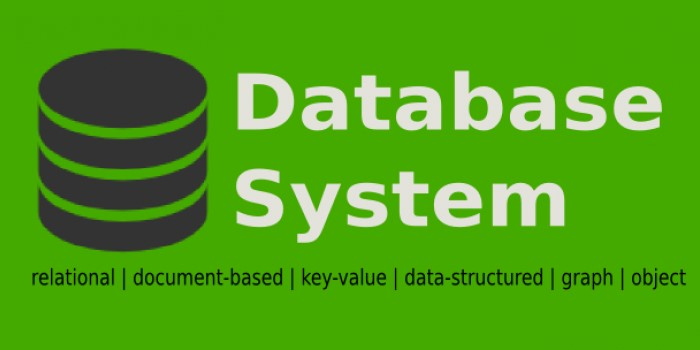
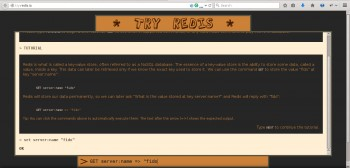
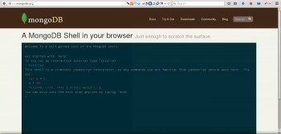
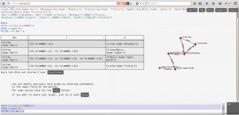
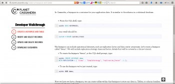
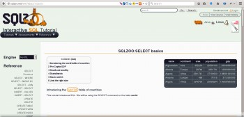
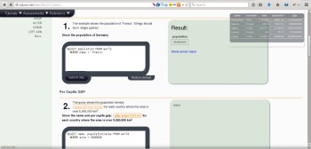

5 Website Interaktif untuk Belajar Database

Database merupakan sebuah infrastruktur yang dibutuhkan untuk membangun sebuah aplikai web atau desktop yang memerlukan penyimpanan data dalam bentuk koleksi. Data yang disimpan dapat terdiri dari banyak baris dan banyak atribut untuk setiap entitasnya. Aplikasi yang kita bangun dapat berinteraksi dengan database melalui sebuah driver atau library agar memudahkan pengembangan aplikasi. Database ini biasanya disimpan di server untuk produksi, ujicoba, atau pengembangan. Kini database tidak hanya didominasi oleh database relasional, tapi ada juga database non relasional. Umumnya database relasional menggunakan SQL untuk berinteraksi dengan tabel dan data di databaserelasional. Sedangkan database non relasional umumnya tidak menggunakan SQL, database jenis ini menggunakan fungsi - fungsi atau sintaks tersendiri. Berikut ini ada beberapa website interaktif yang dapat membantu Anda mempelajari database NoSQL atau SQL:
1.Try Redis

Try Redis (http://try.redis.io) Redis merupakan data structure database yang dapat menyimpan data sederhana (string, integer, float) maupun data kompleks (dictionary, list, sets, hashes, bit array, HyperLogsLogs). data key-value yang disimpan di Redis tidak hanya menyimpan string saja seperti key-value database lainnya. Data yang disimpan di Redis dapat Anda atur masa kadaluarsanya. Selain mempelajarinya dari dokumentasi resmi Redis, Anda dapat mempelajari Redis dari website Try Redis. Anda akan disuguhkan dengan sebuah console yang terpampang di website tersebut, kemudian Anda dapat mengikuti proses belajar yang disediakan oleh Try Redis. Anda akan dibimbing dari dasar hingga tingkat menengah dalam penggunaan Redis dan mengenal data yang dapat disimpan di Redis. Anda hanya harus mengetikan sintaks "next" untuk melanjutkan setiap materinya.
2.Try MongoDB

Try MongoDB (http://try.mongodb.org) MongoDB adalah sebuah document database yang memberikan fitur high performance, high availability, dan automatic scaling. Di MongoDB Anda akan mengenal baris data sebagai document, tabel sebagai collections, atribut sebagai field dan berbagai istilah lainnya. Berbeda dengan database relasional, MongoDB dapat menyimpan koleksi di dalam sebuah field. Misal ada sebuah tabel yang menyimpan blog post, maka di MongoDB komentar dari blog post tersebut dapat disimpan menjadi sebuah array di dalam field komentar. Tidak seperti di database relasional yang akan menyimpan komentar tersebut ke dalam tabel komentar kemudian memberikan relasi one to many. Anda tidak akan menemukan sintaks SQL dalam melakukan operasi database di MongoDB. Anda akan menemukan banyak sekali fungsi - fungsi unik mirip Javascript yang harus Anda kenal dan kuasai. Ingin menguasainya? ayo kita belajar di Try Mongo. Website ini memberikan Anda kemudahan untuk belajar MongoDB dalam konsol interaktif yang dipampang di halaman utamanya. Setiap materi akan mengajak Anda untuk mencoba setiap teknik dan sintaks dari MongoDB. Anda hanya cukup mengetikkan perintah "next" untuk berganti ke materi selanjutnya.
3.Neo4J console

Console Neo4J (http://console.neo4j.org) Graph Database seperti Neo4J memang masih unik keberadaanya baik di industri maupun akademis. Konsep relasional yang diajarkan di banyak kampus tidak dapat mengenalkan metode penyimpanan koleksi data seperti Neo4J ini. Graph Database di klaim memiliki ACID yang lebih akurat dibandingkan relasional. Untuk berinteraksi dengan Neo4J Anda akan menggunakan Cypher, sebuah sintaks mirip SQL tapi ditujukan untuk melakukan query data di dalam graph. Untuk mempelajari Neo4J, Anda dapat mempelajarinya dari dokumentasi resmi Neo4J atau melalui Neo4J Console yang dapat membantu Anda belajar Neo4J dimanapun ketika Anda terpisah dari resource belajar Neo4J yang ada di mesin Anda. Console ini cukup interaktif, selain memperlihatkan graf yang dibentuk, memperlihatkan juga tabel hasil query, dan sintaks highlighting terhadap cypher yang diketikkan.
4.Planet Cassanda

Planet Cassandra (http://planetcassandra.org/) Cassandra sebuah key-value database yang dirilis oleh Apache Foundation. Anda akan mempelajari sintaks yang bernama Cassandra Query Language atau disingkat CQL. Cassandra sendiri memberikan kemudahan bagi Anda yang ingin belajar Cassandra. Anda dapat bergabung untuk belajar Cassandra di Planet Cassandra. Disana Anda dapat memilih materi yang memiliki tingkat kesulitan beragam. Tutorialnya bersifat runtun dan langkah per langkah. Sintaks CQL pun diberi highlighting yang berbeda sehingga mudah dibaca. Anda pun dapat mencoba CQL yang sedang Anda pelajari di suatu materi di konsol interaktif yang disediakan. Terdapat pula video pengantar yang akan membuat Anda lebih paham tentang penggunaan Cassandra
5.SQL Zoo (MySQL, Oracle, SQL Server, dan Lainnya)


SQL Zoo (http://sqlzoo.net) Ingin mencoba sensasi yang berbeda? ayo belajar database relasional di SQLZoo. Website tersebut akan membimbing Anda untuk menguasai SQL dari dasar hingga mahir dengan contoh kasus di setiap materinya. Uniknya, Anda dapat memilih database yang digunakan sesuai dengan kemampuan dan infrastruktur yang Anda miliki. Anda dapat menggunakan MySQL, Oracle, SQL Server, SQLite3, PostgreSQL, dan lainnya. Anda akan mempelajari teknik seperti join tabel, drop database, drop table, alter table, sub query, indexing, alias, procedure, trigger, view, dan lainnya.